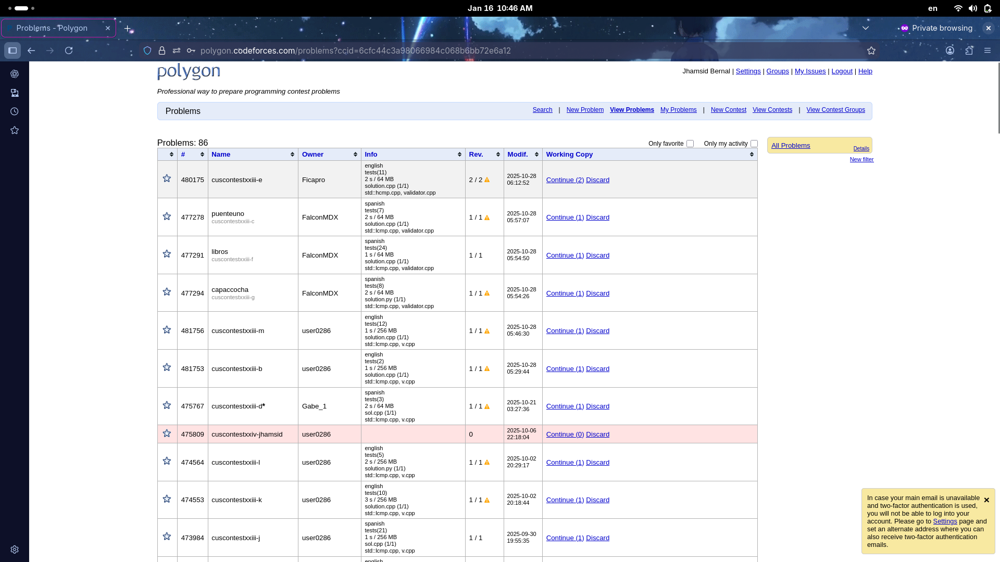

Codeforces Polygon
Para subir los problemas a codeforces, se utiliza la siguiente plataforma [https://polygon.codeforces.com/].
Es en ahí donde se hará los problemas, aquí se hará un pequeño tutorial sobre cómo crear un problema y subir a codeforces
Prerrequisito
- Tener una cuenta de polygon, se crea haciendo click en
register. - Tener algo de paciencia ya que puede que te bote de la sesión y nuevamente tienes que iniciar.
Paso 1: Crear el problema
Una vez iniciado sesión, se mostrará la siguiente pantalla

Busca la parte que dice New problem y te mostrará la siguiente pantall en la que debes introducir el nombre del problema. en este caso es la edición del Cuscontest más la letra del problema.

Una vez creado te saldrá el siguiente contenido

A la cual, se debes dar click en start.
Paso 2: Crear descripción y añadir imágenes
Dentro del problema, la primera sesión que te mostrará es General info.
Donde en ahí se indica cuántos milisegundos debe tardar el algoritmo en ejecutarse como máximo y también cuánta memoria debe usar el algoritmo.

Luego en la sección Statement
Seleccionas el idioma del problema (Puedes seleccionar Inglés si es necesario).

Una vez ya declarado el idioma, te mostrará el siguiente contenido

Donde Pones el título del problema (Sin la letra del problema),
También la descripción del problema, como el input, output, notes. Se puede copiar el contenido del problema original del formato del Cuscontest pero en caso se necesite modificar, se va a hacer.
En caso que sea con imagen, al final de la página está para añadir contenido de imagen y luego solo se añade la ruta de la imagen para que pueda ser visualizado.
Una vez hecho lo puedes poner en guardar o save, si quieres ver cómo está quedando en la opción Review lo puedes revisar

Como se ve en la imagen, hay cosas que se debe modificar o arreglar.
Paso 3: Crear el validator
Ahora hecho esto, puedes dirigirte a la sección Files.

Dentro de ahí, puedes añadir archivos necesarios, en este caso, en new file, creas el siguiente archivo v.cpp y haz click en create File.

Dentro de ahí haces el código para el validator y una vez hecho el validator para el problema, lo pones en save.
En la sección Validator
Seleccionas el validator que hemos creado, en este caso v.cpp.

Para verificar si todo está correcto en esa misma sección puedes crear casos de prueba para verificar si el validator está funcionando correctamente.

Una vez creado los casos de prueba indicando si debería validar o no (con 1 o 0 respectivamente). Puedes ejecutar los casos de prueba y esperar a que salgan los resultados (siempre refreshea la página)

Una vez con los resultados, revisado si es el resultado esperado

Paso 4: Checker
En la sección Cheker. Sirve para verificar la respuesta del output. en caso que el problema requiera múltiples respuestas, es decir, que acepta varias formas, se crea un checker para ello, caso contrario, solo pones el formato lcmp.

Paso 5: Añadir los casos de prueba
En la sección de Test es donde se pondrá los casos de prueba.

Puedes añadir los casos de prueba manualmente, pero si tienes los casos de prueba in entonces lo puedes añadir usando el siguiente enlace, from the archive. Y seleccionas el archivo.

El formato del archivo es que sea formato zip y que solo contando los casos de entrada, en linux se usa comandos para hacer eso.

Una vez hecho el zip y se añada los casos de prueba se mostrará de la siguiente forma.

Para seleccionar los casos de prueba, los casilleros en cada problema seleccionamos los casos que se mostrará al público y abajo en la esquina inferior derecho haz click en example Y lo actualizas.

Paso 6: Añadir código solución.
En la sección Solution files en dónde se pondrá los códigos solución, fuerza bruta, o errónea.

En New file Escribes el nombre del código solución. Una vez creado añades el código del problema solución.

Y lo pones en crear.

En caso sea necesario crear un código de fuerza bruta para estar seguro lo puedes crear y seleccionas el tipo de código como Time limit exceed.
Paso 7: Verificar funcionamiento del problema
Para ver si todo está funcionando correctamente, puedes regresar a review y ver cómo está quedando el problema.

Una vez verificado todo el problema, abajo de todo ahí un enlace llamado commit change, Al hacer click, te saldrá la siguiente pantalla

Una vez hecho puedes hacer la verificación del siguiente cuadro

Haces en click en run a lado de Verification, debe aparecer running.
Una vez hecho eso en invocations te mostrará cómo está saliendo la verifcación (En caso no salga nada, solo es reinicar la página hasta que aparezca)

Dentro puedes ver el estado de cada caso de prueba y cuánto está ejecuntándose

Una vez finalizado se verá de la siguiente forma

Paso 8: Permisos
Una vez hecho todo los pasos anteriores, En la sección de Manage Access te mostrará quienes tiene permiso a tu problema.

Añade usuarios, principalmente codeforces para que el juez pueda agarrar el problema.

Para en el caso del cuscontest también debes añadir a la persona encargado de los problemas para que al final lo suba, por ejemplo user0286 en caso del cuscontest.
Una vez hecho, se mostrará de la siguiente forma.

Paso 9: Publicación
Para finalizar, en la sección Packages creas un páquete (Create package: Standard). Y una vez hecho, te deberá aparecer el siguiente contenido

Paso 10: disfruta
Disfruta, en codeforces puedes ir a Gym y en ahí el link que se generó lo copias y debería mostrar tu problema y listo para ser usado para un concurso.